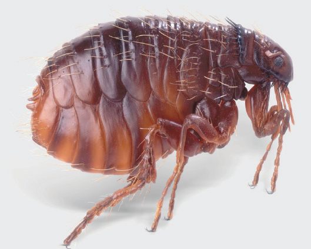
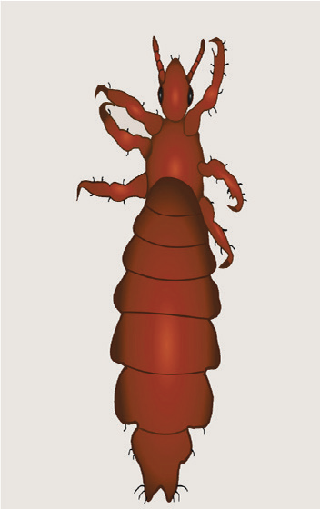
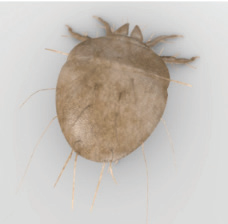
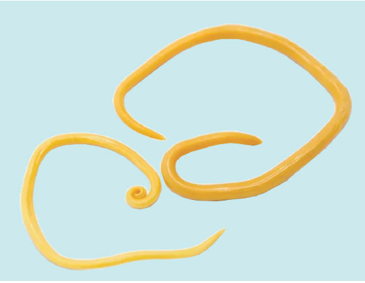

Parasite infestation: Parasites are organisms that live in or outside another organism, called a host, and can harm it. They can be external or internal. External parasites, such as fleas, lice and mites, live on the chicken’s body. Internal parasites, for example, roundworms, live inside the chicken’s body. Parasites can cause problems in chickens. They can compete with the chickens for food, make them lose their appetite, and cause them to get sick. Figures 10.13 (a) to (d) show some chicken parasites.




Micro-organisms or pathogens: These are tiny organisms that can cause diseases. Diseases happen when these harmful micro-organisms or pathogens enter a chicken’s body. Examples of these pathogens are bacteria and viruses. However, some diseases are caused by not getting enough nutrients from food, for example, vitamins. Diseases often spread from one chicken to another, usually more so than from mother to chick. This can happen through: